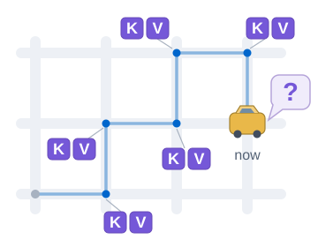
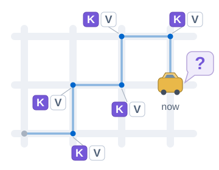
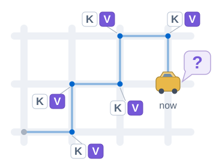

Sapphire Bridge · TaxiGPT case study
Method applied
to TaxiGPT.
An effect is not yet an explanation. We test what proposed explanations predict, then narrow what the evidence supports. Our local follow-up to Beckmann, Queloz & Freitas (2026) rules out four simple response rules for one joint K/V edit; the localization mechanism remains open.
Explore the caseThe experiment in one picture
The joint edit shows an effect.
What would explain it?
The question after each edit
Can researchers still read the taxi’s current location from the model’s internal activity?
TaxiGPT is a transformer trained on random walks through Manhattan’s street network. It uses attention to read earlier states.
K · Keys: Help determine which earlier states the model reads.
V · Values: Supply what is read from those states.
Published test · Beckmann et al.
Edit both
K and V change at the earlier steps

Our added test
Edit K only
Same steps; V stays unchanged

Our added test
Edit V only
Same steps; K stays unchanged

Filled tag: editedOutlined tag: unchangedEarlier steps … shown in compressed form
What the single edits rule out
These are our four simple rules for this edit. All allow the drop after editing K and V together. The single edits test their additional predictions.
| Possible reading | What it would predict | What our single edits show |
|---|---|---|
| Only the K edit matters. | V-only should leave the readout’s right/wrong result unchanged. | V-only changes that result.387 of 512 routes75.59% · [70.06%, 80.57%] |
| Only the V edit matters. | K-only should leave the readout’s right/wrong result unchanged. | K-only changes that result.264 of 512 routes51.56% · [45.46%, 57.64%] |
| Both edits are needed. | Neither single edit should change the right/wrong result. | K-only already changes it.264 of 512 routes51.56% · [45.46%, 57.64%] |
| Either edit is enough. | Each single edit should match the joint edit’s right/wrong pattern. | K-only differs from the joint edit.190 of 512 routes37.11% · [31.35%, 43.14%] |
We compare correct versus incorrect location readouts on each route. Every discrepancy above exceeds our fixed 10% tolerance, even at the lower end of its simultaneous uncertainty interval. The brackets show those intervals.
The added tests limit the explanation.
All four rules allow the joint result. None fits the added tests within the fixed tolerance. We can therefore rule out these four simple accounts of the edit’s effect. That narrows what we can claim to have explained; it does not identify the localization mechanism.
The results
How much did the
location readout change?
All numbers below come from our follow-up, using locally rebuilt readouts. We reran the published joint edit locally. After development on 64 routes, we tested the unchanged rules on 512 fresh held-out routes, with the same 10% disagreement tolerance.
Edit K + V
15.6%80 / 512 routesEdit K only
48.4%248 / 512 routesEdit V only
24.4%125 / 512 routesRandom control
99.8%511 / 512 routesThe random-subspace control leaves decoding almost intact. These are local follow-up measurements, not the paper’s original numbers.
Still unresolved: editing V versus editing both gives 10.74% mismatch, interval [7.34%, 14.98%]. The interval crosses 10%. The rule “Only the V edit matters” fails on its other prediction: editing K should preserve correctness.
See the exact rule predictions
All four rules predict the same result when both are edited.
Each rule predicts whether a single edit should match the joint edit or no edit, route by route. Only the added columns make them disagree.
| Rule | Edit bothPublished test | Edit K onlyOur added test | Edit V onlyOur added test |
|---|---|---|---|
| Only the K edit matters. | Like editing both | Like editing both | Like no edit |
| Only the V edit matters. | Like editing both | Like no edit | Like editing both |
| Both edits are needed. | Like editing both | Like no edit | Like no edit |
| Either edit is enough. | Like editing both | Like editing both | Like editing both |
“Like” means the same right-or-wrong decoding result on each route, not the same exact decoded place.
Exactly which states were edited?
Every condition targets the same earlier move tokens: sequence positions 2 through t−2, where t is the number of input tokens. The origin, goal and final move are excluded. At blocks 1–17, the position-subspace component is replaced with the average component for that move, preserving the orthogonal component.
Edited keys and values are computed from the same changed historical states. Editing both uses both changed components; editing K alone retains clean V, and editing V alone retains clean K. Historical residual states stay fixed: the edit is not propagated through earlier tokens. Only the final token is rerun, with its original input and position; its queries and later activations recompute naturally. Current-intersection correctness is read at layer 18.
This compares components at shared positions. It does not independently vary prefix length or absolute token position. Read the configuration and code check →
Does this support the polyphony argument?
Two affected components do not establish polyphony. In A Polyphonic Conception of AI Understanding, Queloz and Beckmann distinguish circuitry being present from its being correctly recruited and controlling an output. Their TaxiGPT example already draws on the original findings.
Our K/V split does not distinguish polyphonic organisation from a single, more complex computation. It identifies no alternative circuits or compensating pathways and does not measure control over the next move. The connection is methodological: intervention evidence can constrain an explanation without establishing how many mechanisms produce it. Manuscript, §§4.2–4.4 ↗
Scope, decision criteria & sources
What was measured
GPT-2 XL TaxiGPT random-walk checkpoint, 48 blocks, FP32 eager attention. Layer-18 nearest-centroid decoding of the current intersection at the final move of complete 27–34-move routes, all at their goal. The sample contains 512 routes drawn without replacement from 76,135 eligible deduplicated held-out routes. Results concern this checkpoint, map, fitted readout and intervention.
What “ruled out” means
Each rule must match both single-edit conditions within 10% paired correctness disagreement. At least one simultaneous lower bound above 10% excludes a rule. Eight exact hypergeometric intervals use a Bonferroni-shared 5% error budget. Baseline, full-effect, random-subspace and technical gates passed. Editing V versus editing both remains unresolved relative to the 10% threshold.
What remains open
The intervention compares K and V at the same past move-token positions. It does not establish exclusive semantic roles for either component. Prefix length and absolute token position were not independently varied in a controlled comparison; their contributions remain open. Centroids were rebuilt locally from 4,000 training routes, so this is not an exact numerical replication of the authors’ frozen centroid results. The four rules are operational responses, not all possible mechanisms. The result does not establish navigation ability, a unique natural computation, the absence of a map representation, or general superiority of the method.
Trace the evidence
Primary case: v0.4 confirmation. Canonical result: science_v04/results/confirmation.json; SHA256 82c5f9387ce0fecf48e0ffff1aef4c52b0e997dad0ee954d6ccc74b15e40cb52. Beckmann, Queloz & Freitas · World Modeling in Transformers, §2.2 / C.1 ↗
Numerical evidence snapshot · Provenance and interpretation notes · Same-position K/V intervention check. No new model runs, fits or case selection were performed for this page.
The downloadable snapshot contains aggregate results and provenance; the route-level measurements and verification code for this follow-up are not included in this website release.